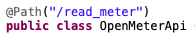
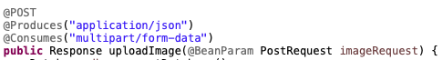
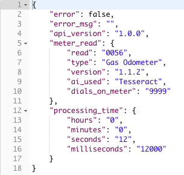

To contribute, please visit our Github
Getting Started
Welcome to openMTR
Welcome to openMTR
To get started, all you need is a camera and an internet connection!
- Take a photo of your meter face
- Go to our Demo Page
- Upload a .jpg through:
- Using our demo's drag and drop feature
- Browsing for the file on your computer
- Entering the image url under the "Advanced" tab
- Enter your email
- Click Submit!
Advanced Options
As mentioned earlier, there is an "Advanced" Option on the Demo page. If you know the number of digits on your meter, you can enter them here using a dropdown. We can still read the meter without this information, but if you do know, it saves a bit of time.
Picture Best Practices
To get the best possible photo, try to follow these steps:
- Try to center the meter face in your photo
- Avoid taking the photo at an angle: face the camera parallel to the meter. Straight on will get the best results.
- Avoid using flash
- If possible, remove any dirt or residue on meter face
We have some more example photos on our Demo Page, so check those out if you need a visual.

Integration
Want to use openMTR in your projects?
Here are examples and code snippets.
Want to use openMTR in your projects?
Here are examples and code snippets.
jQuery
// Capstone 2019
// Please visit our GitHub page for more info.
// https://github.com/OpenMTR/openmtr-api
var formData = new FormData();
formData.append("file", file);
formData.append("email", email);
formData.append("numberOfDials", dials);
jQuery.ajax({
type: "POST",
url: "http://openmtr.azurewebsites.net/api/read_meter",
data: formData,
processData: false,
contentType: false,
dataType: "json",
cache: false,
success: function(data) {
/* On success do something here */
},
error: function(a,b,c) {
var data = a.responseJSON;
if(a.status === 400 && data.error) {
/* Display Error Message Here */
}
}
});
Bash
#!/bin/bash
# Please visit our GitHub page for more info.
# https://github.com/OpenMTR/openmtr-api
CURL=`which curl`
CURL_PARM="${CURL} "
SERVER="http://openmtr.azurewebsites.net/api/read_meter"
if [[ $# -eq 0 ]]; then
echo ""
echo "OpenMtr-API Usage"
echo "$(basename $0) -f <file> -u <url> -e <email> -d <dials on meter face>"
echo "***Please only use either the -f flag or the -u flag, not both***"
echo "-f The file to upload (/path/to/image.jpg)."
echo "-u The url to a given image."
echo "-e Your E-mail address."
echo "-d The number of dials on a meter face expressed as 999999."
echo " Please use \"9's\" to express the dials. Ex: 4 dials on face expressed as 9999"
echo ""
exit 1
fi
while getopts f:e:d:u: option
do
case "${option}"
in
f) FILE=${OPTARG};;
e) EMAIL=${OPTARG};;
d) DIALS=${OPTARG};;
u) URL=${OPTARG};;
esac
done
if [[ -z "$FILE" && -z "$URL" ]]; then
echo "No File or URL given"
exit 1
fi
if [[ -n "$FILE" && -n "$URL" ]]; then
echo "Please only specify either a file OR a URL. Not Both."
exit 1
fi
if [[ -n "$FILE" && -z "$URL" ]]; then
if [[ ! -f "$FILE" ]]; then
echo "The specified file doesn't exist."
exit 1
fi
CURL_PARM+=" -F file=@\"${FILE}\""
fi
if [[ -n "$URL" && -z "$FILE" ]]; then
SERVER+="/url"
CURL_PARM+=" -F url=\"${URL}\""
fi
if [ -z "$EMAIL" ]; then
echo "Email address is required"
exit 1
else
CURL_PARM+=" -F email=\"${EMAIL}\""
fi
if [[ -n "$DIALS" ]]; then
CURL_PARM+=" -F numberOfDials=\"${DIALS}\""
fi
CURL_PARM+=" ${SERVER}";
echo "Reading Meter. Please be patient. This may take a bit ....."
echo ""
eval ${CURL_PARM}
echo ""
exit 0
Java
/* ====================================================================
* Licensed to the Apache Software Foundation (ASF) under one
* or more contributor license agreements. See the NOTICE file
* distributed with this work for additional information
* regarding copyright ownership. The ASF licenses this file
* to you under the Apache License, Version 2.0 (the
* "License"); you may not use this file except in compliance
* with the License. You may obtain a copy of the License at
*
* http://www.apache.org/licenses/LICENSE-2.0
*
* Unless required by applicable law or agreed to in writing,
* software distributed under the License is distributed on an
* "AS IS" BASIS, WITHOUT WARRANTIES OR CONDITIONS OF ANY
* KIND, either express or implied. See the License for the
* specific language governing permissions and limitations
* under the License.
* ====================================================================
*
* This software consists of voluntary contributions made by many
* individuals on behalf of the Apache Software Foundation. For more
* information on the Apache Software Foundation, please see
* <http://www.apache.org/>.
*
*/
/*
* Libraries required are :
* httpclient-4.5.8.jar
* httpcore-4.4.11.jar
* httpmime-4.5.8.jar
* commons-logging-1.2.jar
*/
import java.io.File;
import org.apache.http.HttpEntity;
import org.apache.http.client.methods.CloseableHttpResponse;
import org.apache.http.client.methods.HttpPost;
import org.apache.http.entity.ContentType;
import org.apache.http.entity.mime.MultipartEntityBuilder;
import org.apache.http.entity.mime.content.FileBody;
import org.apache.http.entity.mime.content.StringBody;
import org.apache.http.impl.client.CloseableHttpClient;
import org.apache.http.impl.client.HttpClients;
import org.apache.http.util.EntityUtils;
/**
* Example how to use multipart/form encoded POST request.
*/
public class ClientMultipartFormPost {
public static void main(String[] args) throws Exception {
CloseableHttpClient httpclient = HttpClients.createDefault();
try {
HttpPost httppost = new HttpPost("http://openmtr.azurewebsites.net/api/read_meter");
FileBody photo = new FileBody(new File("C:\\Users\\Username\\pathto\\image.jpg"));
StringBody email = new StringBody("example@email.com", ContentType.TEXT_PLAIN);
StringBody numberOfDials = new StringBody("9999", ContentType.TEXT_PLAIN);
HttpEntity reqEntity = MultipartEntityBuilder.create()
.addPart("file", photo)
.addPart("email", email)
.addPart("numberOfDials", numberOfDials)
.build();
httppost.setEntity(reqEntity);
System.out.println("executing request " + httppost.getRequestLine());
CloseableHttpResponse response = httpclient.execute(httppost);
try {
System.out.println("----------------------------------------");
System.out.println(response.getStatusLine());
HttpEntity resEntity = response.getEntity();
if (resEntity != null) {
String json_string = EntityUtils.toString(response.getEntity());
System.out.println(json_string);
}
} finally {
response.close();
}
} finally {
httpclient.close();
}
}
}
Python
"""
Capstone 2019 OpenMtr-Api
By: James Willhoite
Apr 14, 2019
"""
import requests
import json
base_url = "http://openmtr.azurewebsites.net/api/read_meter"
files = {'file': open('/path/to/image.jpg', 'rb')}
data = {
'email': 'john.smith@johnsmith.com', # Required
'numberOfDials': '9999', # Optional but returns reading faster
# 'url': 'http://theurl.com' # Use only if downloading from a URL
}
response = requests.post(
url=base_url,
data=data,
files=files
)
meter_read = json.loads(response.text)
if meter_read["error"]:
print("Error!: " + meter_read["error_msg"])
exit(1)
else:
print("Your meter read is: " + meter_read["meter_read"]["read"] + " type of meter is: " +
meter_read["meter_read"]["type"] + " total proccessing time is: " +
meter_read["processing_time"]["milliseconds"] + " milliseconds")
.NET
using System.Threading.Tasks;
using System.IO;
using System.Net.Http;
using System.Net.Http.Headers;
using Newtonsoft.Json;
using System.Collections.Generic;
namespace ConsoleApplicationTest
{
class Program
{
static void Main(string[] args)
{
Task<HttpResponseMessage> recognizeTask = Task.Run(() => UploadFileAsync("http://openmtr.azurewebsites.net/api/read_meter", "C:\\Users\\user\\Path\\To\\image.jpg"));
recognizeTask.Wait();
string task_result = recognizeTask.Result.ToString();
// use response
}
public static async Task<HttpResponseMessage> UploadFileAsync(string url,string path)
{
using (var client = new HttpClient())
{
// construct multipart/form-data request
var multiForm = new MultipartFormDataContent();
StringContent email = new StringContent("example@email.com", System.Text.Encoding.UTF8);
email.Headers.ContentType = MediaTypeHeaderValue.Parse("multipart/form-data");
StringContent numberOfDials = new StringContent("9999", System.Text.Encoding.UTF8);
numberOfDials.Headers.ContentType = MediaTypeHeaderValue.Parse("multipart/form-data");
// add API method parameters
multiForm.Add(email, "email");
multiForm.Add(numberOfDials, "numberOfDials");
// add file and directly upload it
FileStream fs = File.OpenRead(path);
multiForm.Add(new StreamContent(fs), "file", Path.GetFileName(path));
// send request to API
HttpResponseMessage response = await client.PostAsync(url, multiForm);
string responseBody = await response.Content.ReadAsStringAsync();
string displayResult = response + "\n\n" + responseBody;
System.Console.WriteLine(displayResult);
return response;
}
}
}
}
PHP
$url = "http://openmtr.azurewebsites.net/api/read_meter"; //Append /url to give a URL for the image
$imageToUpload = "/path/to/image.jpg";
if(!file_exists($imageToUpload)) {
echo "The image doesn't exist";
exit();
}
$fields = array(
"file" => new CURLFile($imageToUpload),
"url" => "http://some_url.com", //If URL then Omit file
"email" => "someone@domain.com",
"numberOfDials" => "999999" //Optional
);
$ch = curl_init($url);
curl_setopt($ch, CURLOPT_POST, 1);
curl_setopt($ch, CURLOPT_POSTFIELDS, $fields);
curl_setopt($ch, CURLOPT_RETURNTRANSFER, true);
$jsonString = curl_exec($ch);
$result = json_decode($jsonString);
curl_close($ch);
/*
* Do something with the results here
*/
exit();
Project Workbook
Capstone 2019
Welcome to openMTR
Welcome to openMTR
This website was built as a Capstone project by a team of students from Pellissippi State Community College for the Knoxville Utilities Board during Spring Semester 2019.
Background
The previous Capstone (2018) team began the build for an Library that uses image recognition AI to read images of utility meters. In short, they created a library that takes an input in .jpg form, attempts to read it, and returns either an error or a results read in the form of a .json string. Here is their Github. They were inspired by openALPR's API, which uses License Plate recognition technology.
KUB is currently continuing the development of the openMTR API. There are several features to watch out for in future, so check out the Versions tab for any updates.
Our Part
Following the creation and continued development of the openMTR Library, KUB tasked us with sharing it with you. We were to build a site and API that exposed the library, as well as deploy the site live through Azure. The KUB team hadn't worked previously with any cloud services, and wanted to use our project as a tool to help them explore the options there. We would learn together.
To see more specific requirements, check out the Requirements tab above.
Meet the Team


Requirements
& Project Specifications
& Project Specifications
As with all projects, the original plan evolved throughout the development lifecycle, but we did start with some solid goals in mind, as well as a few stretch goals.
Mission: Expose openMTR as a functioning application to the world
Deliverables:
- Build a site to demo the meter reader
- Home Page: Introduce and "Sell" the Application
- Demo Page: Get .jpg file from user > send to API > display the response (read or error)
- Documentation Page: Provide directions for use as well as code snippets for developers
- Write an API that connects the user to the openMTR Library
- API must:
- Download image from user
- Validate image format
- Send image to openMTR Library
- Log all calls to the API in SQL Server database on Azure
- Return the pertinent data (Meter Read) to the user
- Create web app service through Microsoft Azure
- Create basic webapp using free tier
- Host SQL Server Database
- Store images uploaded through the API on "WebApp" Server
- Document the performance and all use of the meter reader in a Database
- Design and Create an SQL Server Database on Azure that holds:
- Information on the application's usage
- Meter Read
- Meter Type
- Usage Metadata
- Any gathered user information
- More information about the DB under the "Project Design" tab above
- Create a Class to write to the database when the application is used
- Create a pipeline that uses continuous integration to deploy through Azure Devops
- Connect pipeline to Github
- Trigger build via webhooks whenever master branch is updated
- Tests for successful build
- Release successful build to the Azure App Service
- Present the user with thorough documentation for their own integration needs
- Explain how to use the application to end-users
- Provide code samples for integration for developers
- C#
- Java
- JavaScript
- Python
Technologies & Method Requirements:
- Front End
- Use Semantic UI development framework
- Get inspiration from openALPR's site design
- Stretch Goals:
- Use Ember.js front-end framework
- Back End
- Use Jax-RS (Java™ API for RESTful Web Services) for API build
- Connect API to Azure Using openLiberty
- Use Github for Source Control and Integration
- Code Review:
- Integrate a Automated Static Code Analysis Tool into Github
- Use Azure DevOps to build and release application
- Two approvals required to merge on Git - all team members must review
- Stretch Goals:
- Document the API using Swagger
- Workflow
- Communication Tools:
- Slack Channel
- Trello Board
Note
These are our initial requirements, which we hammered out in a few meetings with KUB. This was the first step of our development process. As with all development, things change. We'll talk about a few of those in the "Implementation" tab (See above) and then compare the original requirements with our final product in the "Wrap-up" section.
Design Documents
& Planning Process
& Planning Process
We met with KUB weekly throughout the project, and after establishing requirements, we began designing the layout of the project. We wanted to lay out how we wanted the project to proceed in term of our activities, as well as design the application. We made documents on a high level, and drilled in for some functional detail. The front-end design went through many iterations, and changed continually until the end of the project.
An overhead view of the Project

API - Data Flow Diagram
Database Format

Initial Database Design

VS
Project Schedule

Project Workflow & the Pipeline
Deployment & the Team Workflow
Deployment & the Team Workflow
One of the main focuses of our project was establishing an automated deployment pipeline by connecting Azure and Github, and incorporating Static Code Analysis and a system of internal checks. This way, even though we weren't all working on the same part of the project, we would be closely involved in all parts of the progress.
Our CICD workflow visualized:

KUB was adamant that establishing a workflow would be a huge benefit, and in hindsight, we couldn’t agree more. It has been so good to track and communicate the way we have, and learning Github to the point where we feel comfortable forking a repository and contributing to other open source projects is a great feeling.

We wanted to take this project seriously and treat it as if it were a real work project, so we implemented a tracking system day one. Basically, we shared a google doc that was visible to us and the KUB team. In this doc, we entered minutes and a description of work every time we did anything in the project. This way, we were able to see each other’s contributions: issues encountered, successful additions, and time spent. These times were compiled in a spreadsheet and converted to the graph below.

Github Commit Logs:


Sample from Project Workbook:

Implementation
A look at how we did things
A look at how we did things
API
Working with JAX-RS - James Willhoite
What is Jax-RS? Jax-RS is a combination of specifications, interfaces, and annotations offered by Java EE.
Without these the API would have been a lot harder to create:

The annotation for the main endpoint

The annotations for uploading a image through the API
I learned that when you send a POST request to the API the first thing that happens is Jax-RS takes the input fields and assigns them to the properties inside of the Post Class. The fields are then validated to make sure that:
- the email address is valid
- the number of dials on the meter face is a valid string (if supplied)
- there has been a image uploaded
*Note: If the user did supply the number of dials on the meter face, then the API will use that format for the read. If no number is given, the API will loop, testing from six to four, breaking if a valid read is returned.*
Here is the response when interacting directly with the API:

Front-End
Building openMTR - Jenny Franklin
We knew from the beginning we wanted three pages on the site. A splash page that introduced openMTR, a demo page that connected to the API, and a documentation page where developers could come and get code snippets for their own uses. The look of the site evolved over the life of the project, and a lot of that came from my own relationship with HTML, CSS, and Semantic UI.
Semantic UI is development framework, in some ways similar to Bootstrap or others. Unlike Bootstrap, it has a sixteen-column structure, which gives a little more flexibility in formatting. I had worked with Bootstrap last semester during our Internet Programming class, where I had modified a template site to use for my project. This time, there was no template, and I was coding the site free-form. It took more than half the semester before I had that lightbulb moment. I was struggling through the CSS, frustrated with jQuery, but at some point it just clicked. You can see that reflected in the hours log if you look at the workflow tab. All of the sudden I was free to make it look however I wanted. At that point, I completely updated and polished every piece of the site I had built to that point.
Responsiveness:
It was important that the site be responsive, as the goal is for the user to be outside. If they have a tablet or smartphone, they can take a photo directly on their device. That took some time to figure out, as Semantic UI has some responsive features, but requires a lot of hardcoding to get responsive menus. There are listeners for page size that trigger different CSS options for some elements. Between us and KUB, there was a team effort to get many of the fun features functioning, but it turned out great.
Additional Site Features
- Scroll button that appears when you are not at the top of the page
- Responsive drag/drop field that hides if not supported
A discarded idea for the look of the demo page:

A sample of the html code for this page:

Azure
We were excited to hear one of the requirements was to implement out project on Azure. Jenny had some familiarity with Cloud-based services through AWS, but Azure was very new to us. The KUB team told us they wanted to explore the possibility of moving webapps to the cloud, and we could walk through that exploration with them. Together we would see the pros and cons, and hopefully learn what challenges they might face, as well as overcome them.
We started off with the Free tier in the Azure web app. This gave us an opportunity to discover the limitations of the Azure free tier. For example: When the app hasn't seen any calls in awhile, the server will unload the app to save processing power. When a user tries to vist the site the app will be spun up and served to the client. This results in a pretty considerable delay, but after that inital wait, the user is free to browse through the site with no problems.
Another limitation to the Free Tier is that the it maxes out at 1 Gig of RAM/hour. openMTR requires almost a Gig worth of RAM just to get going, so in the end we bumped the subscription up to the Basic 1 paid tier. This removed those quotas and allowed us to start seeing results. However, at the Basic 1 tier there is still a lag when the server hasn't been used in awhile, as Azure still unloads the webapp when not in use.
CI/CD Pipeline
Continuous Integration/Continuous Delivery was a new concept for our team. KUB stressed the importance of learning the process, it being a core workflow tool used in modern development teams. There was definitely a learning curve, and it took a while for the team to find the right setup. Some complications we ran into were simple fixes, but difficult to find, such as using **/*/ vs **\*\. Forward slash is common in Linux environments, but Azure prefers the back slash for Windows environments.

The most rewarding part of this portion was being able to watch a pull request turn into a working application just minutes after being reviewed. This part of our project really aided in allowing the team to have a continuous workflow throughout the whole project. We were able to watch each new version of the application build with Maven in real-time, and instantly knew if the requests we were making for changes were functioning as we thought, or if we needed to go back and fix something.
Devops Release Example:
When something is merged into master, it triggers a release through the pipeline to deploy the artifact as an Azure webapp.

Database
Our database is hosted on an Azure SQL Server as a SQL database. This was fairly straightforward to create, and pricing was relatively straightfoward for it. The base cost of having a database is currently $5/month, then additional costs are incurred with usage. With this model, the database will continue to be inexpensive until it begins to be used regularly, and retains easy scalability, depending on budget.
One benefit we found to hosting this database on Azure is that it is very secure. Azure Access Control uses the "principle of least privilege" in every aspect of user access. This means if someone wants to be a database contributor, they MUST be assigned that role before they can do so. Basically all users default to read-only until assigned otherwise.
The final version of the database fields used to store information on each request sent through the API
What's New in Version #.##
placeholder for Version Updates